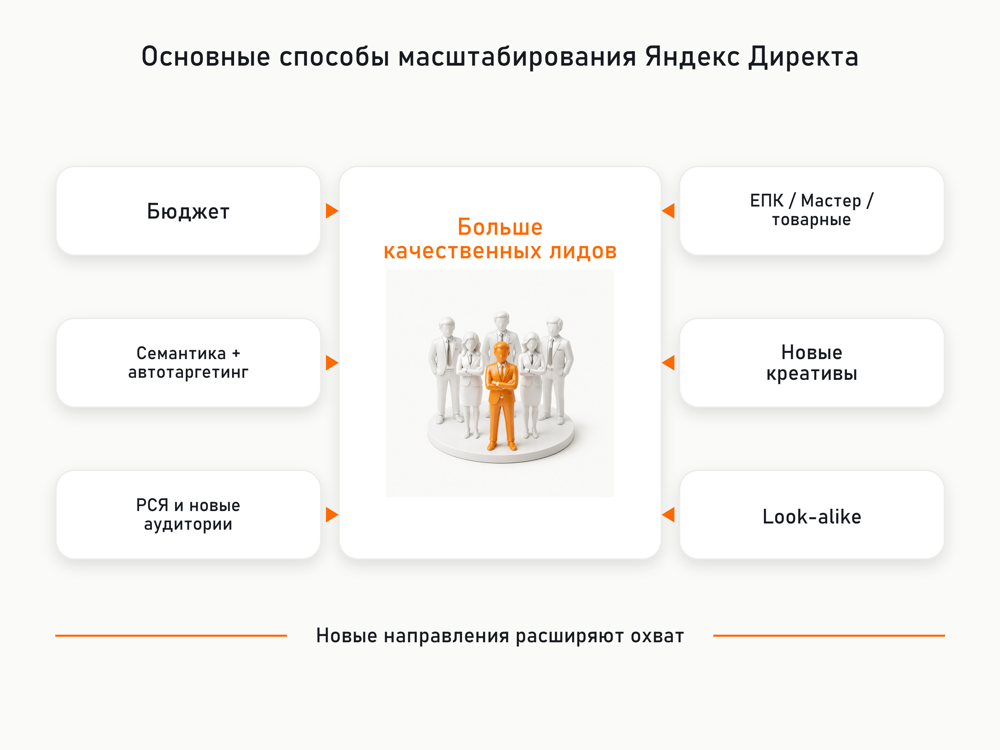
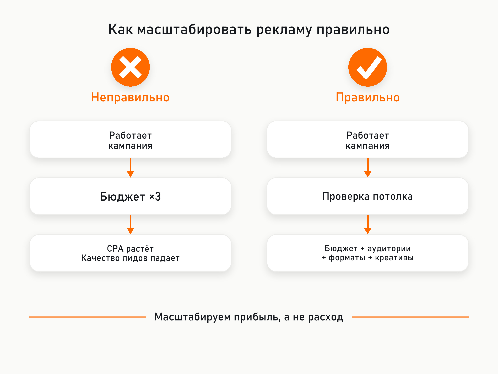

Блог о платном трафике
Масштабирование Яндекс Директа: как увеличить количество заявок и не сломать работающую рекламу
Хорошая рекламная кампания стабильно приносит заявки по устраивающей бизнес цене. Следующая мысль обычно очевидна: если увеличить бюджет в два раза, заявок тоже должно стать примерно в два раза больше.
На практике Яндекс Директ так не работает.
Допустим, компания получает 100 заявок в месяц по 2 000 рублей. Бюджет увеличивают с 200 000 до 400 000 рублей и ожидают около 200 заявок. Вместо этого получают 140 заявок по 2 800 рублей, а отдел продаж одновременно начинает жаловаться на ухудшение качества обращений.
Это вполне обычная ситуация при масштабировании рекламы.
Проблема в том, что количество подходящей аудитории ограничено. Сначала рекламная система может находить наиболее доступные конверсии, а для дальнейшего роста ей приходится расширять охват, участвовать в большем количестве аукционов и искать пользователей, вероятность конверсии которых ниже.
Поэтому масштабирование Яндекс Директа - это не увеличение бюджета. Это последовательный поиск дополнительных источников качественного трафика.
Что такое масштабирование рекламы в Яндекс Директе
Под масштабированием обычно понимают увеличение количества целевых действий при приемлемой для бизнеса экономике.
Ключевое слово здесь именно "целевых".
Если после увеличения бюджета количество заявок выросло на 50%, но половина новых обращений оказалась некачественной, такое изменение сложно считать успешным масштабированием.
В идеальном варианте нужно увеличивать:
- количество квалифицированных лидов;
- количество продаж;
- выручку;
- прибыль.
А стоимость привлечения клиента, ДРР или другой основной показатель экономики бизнеса должны оставаться в допустимых пределах.
Поэтому до масштабирования желательно иметь нормальную аналитику. Минимум - цели Метрики и корректную передачу заявок и звонков. Лучше - данные о квалифицированных лидах и продажах из CRM.
Иначе можно прекрасно масштабировать количество форм на сайте и одновременно ухудшать реальный финансовый результат бизнеса.
Почему нельзя просто увеличить бюджет

У любой рекламной кампании есть ограниченный объём доступного спроса.
Представим очень упрощённую ситуацию.
При бюджете 100 000 рублей Директ находит 50 хороших конверсий по 2 000 рублей.
После увеличения бюджета до 150 000 рублей он может найти ещё 20 конверсий примерно такого же качества.
А после увеличения бюджета до 300 000 рублей таких пользователей на рынке просто может не оказаться.
Для получения дополнительного объёма системе приходится расширять закупку трафика.
На поиске это могут быть более дорогие аукционы и более широкие поисковые запросы. В РСЯ - пользователи с меньшей прогнозируемой вероятностью совершить нужное действие.
Это не означает, что алгоритм обязательно начнёт работать плохо. Иногда у кампании действительно огромный запас для роста. Но линейной зависимости между бюджетом и количеством заявок практически никогда нет.
Чем ближе реклама подходит к реальной ёмкости рынка, тем дороже обычно становится следующий дополнительный лид.
Сначала нужно понять, есть ли вообще куда масштабироваться

Это первый вопрос, который я бы задавал перед любыми изменениями.
Иногда специалист начинает придумывать новые кампании, аудитории и креативы, хотя бизнес уже забирает значительную часть доступного спроса.
Особенно хорошо это заметно в узких B2B-нишах или локальных услугах.
Например, если несколько десятков компаний в месяц ищут конкретное промышленное оборудование в нужном регионе, невозможно бесконечно увеличивать количество обращений из Директа.
Можно попробовать расширить семантику, подключить РСЯ, другие форматы и аудитории, но рынок от этого не станет в несколько раз больше.
Для поисковых кампаний приблизительно оценить потенциальный спрос помогают Вордстат и инструмент "Прогноз бюджета". Последний позволяет посмотреть ориентировочное количество запросов, показов, кликов и расходов по заданной семантике и региону. Реальные результаты будут отличаться, поскольку конкуренция и ставки постоянно меняются.
Источник: Яндекс Поддержка
Также нужно смотреть фактическую статистику кампаний:
- насколько полностью расходуется бюджет;
- какие поисковые запросы уже приводят трафик;
- какая часть семантики действительно работает;
- какие категории автотаргетинга дают конверсии;
- насколько меняются CPA и качество лида по мере роста расхода.
Если при каждом увеличении бюджета дополнительный трафик становится заметно хуже, вполне возможно, что кампания уже приблизилась к своему эффективному потолку.
Первый способ масштабирования - постепенно увеличивать бюджет
Самый простой вариант подходит, когда работающая кампания ограничена именно бюджетом.
Но я бы не увеличивал бюджет сразу в два или три раза.
Резкое изменение объёма трафика способно временно изменить работу стратегии. Сам Яндекс указывает, что изменение бюджета в несколько раз может потребовать дообучения стратегии на новых данных, а показатели в этот период могут отличаться от прежних.
Источник: Яндекс Поддержка
Гораздо логичнее двигаться постепенно и после каждого увеличения оценивать результат.
Причём смотреть нужно не только CPA в интерфейсе Директа.
Например:
Было:
100 заявок
CPA 2 000 рублей
70% квалифицированных лидов
Стало:
130 заявок
CPA 2 150 рублей
68% квалифицированных лидов
Такое масштабирование вполне может устраивать бизнес.
Другой вариант:
Было:
100 заявок
CPA 2 000 рублей
70% квалифицированных лидов
Стало:
150 заявок
CPA 2 600 рублей
45% квалифицированных лидов
В интерфейсе количество конверсий выросло на 50%, но реальный результат уже выглядит значительно хуже.
Адаптация бюджета в Яндекс Директе
В 2026 году особенно интересна встроенная функция "Адаптация бюджета".
Она предназначена именно для ситуации, когда кампания выполняет целевой CPA или ДРР, но упирается в недельный бюджет.
Механика достаточно разумная. На следующую неделю бюджет увеличивается только если предыдущая кампания израсходовала более 90% бюджета, удержала установленный CPA или ДРР и в ней не происходило изменений, вызывающих перезапуск стратегии.
Яндекс рекомендует начинать как минимум с увеличения на 10%. При этом изменение через механизм адаптации бюджета не перезапускает обучение стратегии.
Источник: Яндекс Поддержка
Для стабильной кампании это один из самых аккуратных способов проверить запас масштабирования.
Второй способ - расширять поисковый спрос
В поисковых кампаниях масштабирование не должно ограничиваться бюджетом.
Нужно смотреть, какую часть потенциального спроса кампания вообще охватывает.
Здесь есть несколько направлений.
Расширение семантики
При анализе поисковых запросов регулярно находятся новые формулировки, которые раньше не были учтены.
Иногда это небольшие низкочастотные запросы, но вместе они способны дать дополнительный объём.
Сам Яндекс рекомендует расширять ключевые фразы, если кампания в основном работает по низкочастотным запросам и алгоритму не хватает информации.
Источник: Яндекс Поддержка
Но добавлять тысячи околоцелевых запросов только ради увеличения охвата смысла нет.
Расширение должно происходить до тех пор, пока новая семантика сохраняет приемлемую экономику.
Автотаргетинг
Сейчас это один из основных инструментов расширения поиска.
Автотаргетинг анализирует объявление и посадочную страницу и самостоятельно сопоставляет их с запросами пользователей.
На поиске доступны разные категории запросов:
- целевые;
- узкие;
- широкие;
- альтернативные;
- сопутствующие.
Поэтому масштабировать автотаргетинг можно не просто переключателем "включить", а через постепенное тестирование разных категорий.
Источник: Яндекс Поддержка
Например, если целевые и узкие запросы уже хорошо работают, следующим тестом могут стать широкие.
Но здесь особенно важно смотреть реальные поисковые запросы.
Переход от целевых категорий к широким практически неизбежно увеличивает потенциальный охват. Вопрос только в том, остаётся ли дополнительный трафик экономически оправданным.
Третий способ - масштабирование через РСЯ

В сетях потенциальный охват обычно значительно шире, чем на поиске, поэтому возможностей для экспериментов больше.
В Единой перфоманс-кампании на уровне группы можно использовать тематические слова, автотаргетинг, интересы и привычки, сегменты аудиторий и другие условия показа.
Источник: Яндекс Поддержка
Это позволяет тестировать несколько разных способов поиска холодной аудитории.
Например:
кампания 1 - тематические слова;
кампания 2 - автотаргетинг;
кампания 3 - интересы и привычки;
кампания 4 - похожие аудитории.
Но здесь есть важная проблема.
Чем сильнее дробится структура, тем меньше данных получает каждая отдельная стратегия.
Яндекс указывает минимум около 10 конверсий в неделю для нормального обучения, а в рекомендациях по эффективности советует рассчитывать недельный бюджет примерно на 10-20 конверсий. Первичная оценка автоматической стратегии обычно требует 7-14 дней.
Источник: Яндекс Поддержка
Поэтому создавать 15 отдельных кампаний по 2-3 конверсии в неделю обычно плохая идея.
Пакетные стратегии при масштабировании
Частично проблему маленького количества данных решают пакетные стратегии.
Несколько ЕПК можно объединить под одной стратегией. Конверсии из всех входящих кампаний используются для общего обучения, а бюджет распределяется между ними с учётом эффективности.
Яндекс прямо указывает, что пакетные стратегии предназначены в том числе для решения проблемы нехватки конверсий. Рекомендуемый общий объём событий для пакета - не менее 10 конверсий в неделю.
Источник: Яндекс Поддержка
Это не означает, что пакетная стратегия обязательно окажется лучше.
В свежем кейсе eLama по масштабированию медицинского центра пакетные стратегии тестировали, но они не улучшили результат и были отключены. При этом рост обеспечивали комбинацией увеличения бюджета, расширения семантики, изменения целей, тестирования посадочных и разных типов кампаний.
Источник: eLama
То есть пакетная стратегия - ещё один инструмент для теста, а не универсальное решение.
Четвёртый способ - запускать другие типы кампаний
Одна из самых интересных возможностей масштабирования в современном Директе заключается в том, что разные типы кампаний могут находить аудиторию немного по-разному.
Если хорошо работает обычная ЕПК, это не означает, что нужно бесконечно пытаться увеличивать только её бюджет.
Для некоторых проектов я бы параллельно тестировал Мастер кампаний.
Мастер самостоятельно подбирает аудиторию и может размещать рекламу на поиске, в РСЯ и Картах.
Источник: Яндекс Поддержка
Для интернет-магазинов отдельно имеет смысл тестировать товарные кампании. Они автоматически создают объявления по ассортименту и показывают товары как на поиске, так и в РСЯ.
Источник: Яндекс Поддержка
В актуальной ЕПК также можно использовать товарные объявления, страницы каталога, графические и комбинаторные объявления. В 2026 году Яндекс начал перевод ЕПК с прежних текстово-графических объявлений на комбинаторные. В них система собирает множество вариантов рекламы из нескольких заголовков, текстов, изображений и видео.
Источник: Яндекс Поддержка
Поэтому масштабирование может происходить не только за счёт новой аудитории, но и за счёт новых способов взаимодействия с той же аудиторией.
Пятый способ - новые креативы и офферы
Особенно важен этот подход в РСЯ.
Можно оставить примерно тот же таргетинг, но дать системе совершенно другой набор объявлений.
Например, рекламируется услуга установки пластиковых окон.
Один вариант рекламы:
"Пластиковые окна от производителя"
Другой:
"Рассчитайте стоимость окон за 2 минуты"
Третий:
"Заменим окна в квартире за 7 дней"
Четвёртый:
"Окна с установкой и гарантией"
Формально рекламируется одна услуга, но сообщения могут привлекать пользователей с разной мотивацией.
Современные комбинаторные объявления дополнительно позволяют загружать несколько элементов, из которых Директ формирует различные сочетания.
Источник: Яндекс Поддержка
Но я бы не превращал это в генерацию десятков почти одинаковых заголовков.
Для масштабирования полезнее тестировать действительно разные смыслы: цена, скорость, результат, гарантия, конкретная проблема клиента, особенности продукта.
Шестой способ - look-alike аудитории
Если у бизнеса накоплено достаточно собственных данных, можно попробовать похожие аудитории.
В Яндекс Аудиториях создаётся исходный сегмент, после чего алгоритм ищет пользователей с похожими интересами и поведением.
Причём степень сходства можно менять. Чем строже похожесть, тем меньше потенциальный охват.
Источник: Яндекс Поддержка
Здесь большое значение имеет качество исходной аудитории.
Look-alike из всех посетителей сайта и look-alike из реальных покупателей - совершенно разные вещи.
Если есть возможность, я бы строил исходные сегменты именно по качественным событиям:
- покупатели;
- заключённые сделки;
- квалифицированные лиды;
- повторные клиенты;
- клиенты определённого продукта.
Яндекс также рекомендует не смешивать в один исходный сегмент пользователей с совершенно разным поведением и этапами воронки.
Источник: Яндекс Поддержка
Look-alike обычно стоит воспринимать как дополнительный способ поиска холодной аудитории, а не как замену основным кампаниям.
Седьмой способ - расширение географии
Для некоторых бизнесов это самый простой путь масштабирования.
Допустим, компания работает в Ростове-на-Дону, но способна оказывать услуги клиентам по всему Южному федеральному округу.
Вместо того чтобы пытаться выжать ещё 30% лидов из одного города, иногда проще запустить отдельные кампании в Краснодаре, Ставрополе или других регионах.
Особенно хорошо такой подход работает для:
- B2B;
- дистанционных услуг;
- интернет-магазинов;
- онлайн-образования;
- производственных компаний;
- услуг, где клиент готов работать с подрядчиком удалённо.
Но географию желательно тестировать отдельно.
Стоимость клика, конкуренция, конверсия сайта и качество обращений в разных регионах могут очень сильно отличаться.
Восьмой способ - улучшать саму воронку
Это часто забывают, когда говорят о масштабировании Директа.
Предположим, реклама приводит 10 000 посетителей.
Сайт конвертирует 2%:
10 000 посетителей -> 200 заявок.
Можно пытаться купить ещё 5 000 посетителей.
А можно увеличить конверсию сайта с 2 до 2,5%:
10 000 посетителей -> 250 заявок.
Те же дополнительные 50 лидов получены без расширения рекламного трафика.
Поэтому иногда лучший способ масштабировать Директ - вообще не менять Директ.
Новая посадочная страница, более сильный оффер, понятная форма заявки, удобная мобильная версия или изменение процесса обработки обращений способны дать больший прирост, чем очередная рекламная кампания.
Особенно это важно около потолка рекламного спроса.
Если подходящих пользователей больше почти нет, работать приходится уже не с количеством трафика, а с эффективностью его превращения в продажи.
Нельзя масштабировать рекламу только по заявкам
Это одна из самых опасных ошибок.
Предположим, было:
200 заявок по 1 500 рублей.
После масштабирования:
300 заявок по 1 700 рублей.
На первый взгляд всё отлично.
Но отдел продаж сообщает:
раньше 40% заявок были квалифицированными;
теперь только 25%.
Считаем стоимость квалифицированного лида.
До масштабирования:
200 × 40% = 80 квалифицированных лидов.
Расход 300 000 рублей.
Стоимость квалифицированного лида - 3 750 рублей.
После:
300 × 25% = 75 квалифицированных лидов.
Расход 510 000 рублей.
Стоимость квалифицированного лида - 6 800 рублей.
В Директе заявок стало на 50% больше.
В бизнесе квалифицированных лидов стало меньше.
Поэтому для масштабирования особенно полезна передача более глубоких конверсий из CRM: квалифицированная заявка, продажа, оплаченный заказ и другие события, максимально приближенные к деньгам.
Почему после масштабирования реклама иногда резко портится
Основных причин несколько.
Первая - закончилась наиболее качественная аудитория.
Вторая - слишком резко увеличили бюджет и значительно изменили объём трафика.
Третья - вместе с бюджетом одновременно изменили цели, таргетинги, структуру и объявления.
Яндекс отдельно предупреждает, что некоторые изменения полностью перезапускают стратегию. Среди них смена стратегии, модели оплаты, ограничения расходов или полная смена целевых действий. Изменение бюджета в несколько раз или состава регионов может потребовать дообучения.
Источник: Яндекс Поддержка
Поэтому лучше не менять сразу пять параметров.
Иначе невозможно понять, какое именно действие улучшило или испортило результат.
Четвёртая причина - система оптимизируется не по тому сигналу.
Если стратегия получает в качестве основной цели любую отправку формы, а половина форм оказывается мусором, алгоритм честно ищет пользователей, похожих на тех, кто отправляет формы.
И может делать это очень эффективно.
Только бизнесу от этого никакой пользы.
Как я бы масштабировал работающую кампанию
Я бы двигался последовательно.
Сначала проверил бы, что текущая реклама действительно эффективна по продажам, а не только по данным Метрики.
Затем оценил бы запас существующего спроса.
Если работающая кампания ограничена бюджетом, постепенно увеличивал бы его, не меняя одновременно остальные параметры.
Параллельно на поиске расширял бы семантику и категории автотаргетинга.
После этого тестировал бы дополнительные источники холодного трафика в РСЯ: тематические слова, автотаргетинг, интересы и похожие аудитории.
Отдельно проверял бы другие алгоритмы и форматы: Мастер кампаний, товарные кампании, дополнительные ЕПК.
Следующим уровнем стали бы новые рекламные сообщения и посадочные страницы.
И только после получения статистики по каждому новому направлению принимал бы решение, куда переносить дополнительный бюджет.
Это намного надёжнее схемы "кампания работает хорошо - увеличим бюджет в три раза".
Главная проблема масштабирования - потолок существует всегда
Практически у любого бизнеса есть точка, после которой дополнительный клиент начинает обходиться дороже предыдущего.
Где находится эта точка, заранее никто не знает.
У одного проекта бюджет можно увеличить в пять раз практически без изменения CPA.
У другого уже дополнительные 20% расходов существенно ухудшат экономику.
И дело здесь не обязательно в качестве настройки Яндекс Директа.
Может закончиться сам спрос.
Может оказаться слишком маленьким регион.
Может не хватать подходящей аудитории в РСЯ.
Может проигрывать предложение конкурентов.
Может плохо конвертировать сайт.
Поэтому задача специалиста при масштабировании заключается не в том, чтобы заставить Яндекс потратить больше денег.
Потратить их рекламная система сможет.
Задача заключается в том, чтобы найти следующий объём целевой аудитории, который бизнес всё ещё может покупать с прибылью.
И если такого объёма внутри Яндекс Директа больше нет, это тоже нормальный результат анализа.
Иногда рекламная кампания уже работает практически на своём эффективном максимуме.